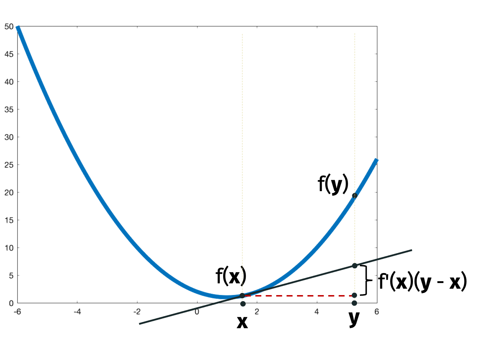
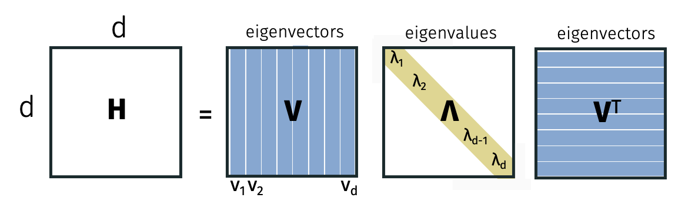
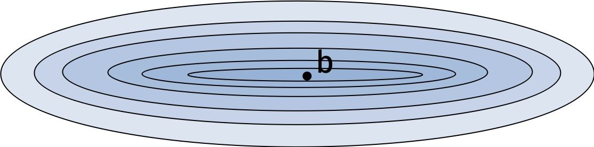

Gradient Descent with Second Order Conditions
First Order Conditions
Recall the problem we considered last class. We are given a function \(f: \mathbb{R}^d \to \mathbb{R}\) with a function oracle and a gradient oracle. The function oracle returns \(f(\mathbf{x})\) while the gradient oracle returns \(\nabla f(\mathbf{x})\) for any \(\mathbf{x} \in \mathbb{R}^d\) we specify. Given these oracles, we want to find an approximate minimizer \(\hat{\mathbf{x}}\) so that
\[\begin{align*} f(\hat{\mathbf{x}}) \leq \min_{\mathbf{x}} f(\mathbf{x}) + \epsilon. \end{align*}\]
We use the following prototypical gradient descent method. We choose a starting point \(\mathbf{x}^{(0)}\). Then, for \(t \in [T]\), we update the current iterate
\[\begin{align*} \mathbf{x}^{(t+1)} = \mathbf{x}^{(t)} - \eta \nabla f(\mathbf{x}^{(t)}). \end{align*}\]
Finally, we returned the best iterate \(\hat{\mathbf{x}} = \arg \min_{\{\mathbf{x}^{(t)}\}_{t=1}^T} f(\mathbf{x}^{(t)})\).
Since the gradient is the direction of steepest descent at \(\mathbf{x}\), we expect the function value to decrease for sufficiently small step sizes \(\eta\). However, if \(\eta\) is too small, the function value may decrease very slowly. We are interested in how quickly we can reach an approximate minimizer.
For the basic gradient descent analysis we performed last class, we assumed that the function \(f\) is convex, the function satisfies a Lipschitz condition \(\| \nabla f(\mathbf{x}) \|_2 \leq G\) for all \(\mathbf{x} \in \mathbb{R}^d\), and the starting point is within a ball of radius \(R\) centered at the minimizer \(\mathbf{x}^*\). The last condition ensures that we don’t start too far from the true minimizer.
When we set \(\eta = \frac{R}{G \sqrt{T}}\) and run the algorithm for \(T \geq \frac{R^2 G^2}{\epsilon^2}\) iterations, we showed that the output of the gradient algorithm satisfied \(f(\hat{\mathbf{x}}) \leq f(\mathbf{x}^*) + \epsilon\) where \(\mathbf{x}^*\) is the true minimizer of \(f\).
The proof was tricky because \(f(\mathbf{x}^{(t)})\) does not necessarily improve monotonically; in particular, it’s possible to overshoot the minimizer especially if the function around the minimizer is very steep.
We also considered the projected gradient descent algorithm where we are optimizing over a convex set \(\mathcal{S}\). In addition to the function and gradient oracles, we used a projection oracle that returns \(P_{\mathcal{S}}(\mathbf{x}) = \arg \min_{\mathbf{y} \in \mathcal{S}} \| \mathbf{x} - \mathbf{y}\|_2\). The projected gradient descent algorithm is similar to the gradient descent algorithm except that we project the update onto the set \(\mathcal{S}\). In particular, \[\begin{align*} \mathbf{x}^{(t+1)} = P_{\mathcal{S}} \left( \mathbf{x}^{(t)} - \eta \nabla f(\mathbf{x}^{(t)}) \right). \end{align*}\]
Using similar techniques to the gradient descent bound, we showed the same iteration bound for the projected gradient descent algorithm. The result is somewhat surprising: the projection step does not affect the iteration complexity. That is, projecting onto a convex set does not make the iterate too much worse.
Both the bounds in the gradient descent and projected gradient descent algorithms are actually optimal for convex first order optimization in general. But, in practice, the dependence on \(1/\epsilon^2\) is pessimistic: gradient descent typically requires far fewer steps to reach an approximate minimizer.
The gap between theory and practice is in part because the previous bounds only made the very weak first order assumption that the function is Lipschitz. In the real world, many functions satisfy stronger assumptions. Today, we will discuss assumptions that involve the second derivative of the function.
Second Order Conditions
We will consider the second order conditions \(\alpha\)-strong convexity and \(\beta\)-smoothness. To define these conditions for multivariate functions, we will need to build some generality for multivariate functions. But, for scalar functions, we can describe them in terms of the second derivative. We say that that \(f\) is \(\alpha\)-strongly convex and \(\beta\)-smooth if for all \(x\), \[\begin{align*} \alpha \leq f''(x) \leq \beta. \end{align*}\]
The following table gives the iteration complexity to achieve an \(\epsilon\) approximate minimizer under different assumptions.
| \(G\)-Lipschitz | \(\beta\)-smooth | |
|---|---|---|
| \(R\) bounded start | \(O\left( \frac{G^2 R^2}{\epsilon^2} \right)\) | \(O\left( \frac{\beta R^2}{\epsilon} \right)\) |
| \(\alpha\)-strong convex | \(O\left( \frac{G^2}{\alpha \epsilon} \right)\) | \(O\left( \frac{\beta}{\alpha} \log(1/\epsilon)\right)\) |
The takeaway is that having either an upper and lower bound on the second derivative speeds up convergence. In addition, having both an upper and lower speeds up convergence even more.
For scalar functions, \(\beta\)-smoothness is equivalent to \[\begin{align*} [f(y) - f(x)] - f'(x) (y-x) \leq \frac{\beta}{2} (y-x)^2 \end{align*}\] for all \(x\) and \(y\).
We’ll prove that \(\beta\)-smoothness implies this condition to get a flavor for the proof techniques. We can write \[\begin{align*} f(y) - f(x) &= \int_{x}^y f'(t) dt \\ &\leq \int_{x}^y ( f'(x) + (t-x) \beta )dt \\ &= f'(x) (y-x) + \frac{\beta}{2} (t-x)^2 |_x^y \\ &= f'(x) (y-x) + \frac{\beta}{2} (y-x)^2 \end{align*}\] where the inequality follows because \(f''(x) \leq \beta\). In particular, \(f'(t)\) is below the tangent line at \(x\) given by \(f'(x) + (t-x) \beta\) for all \(t\).
Similarly, \(\alpha\)-strong convexity is equivalent to \[\begin{align*} [f(y) - f(x)] - f'(x) (y-x) \geq \frac{\alpha}{2} (y-x)^2 \end{align*}\] for all \(x\) and \(y\).
Intuitively, the conditions say that the function is bounded above and below by a quadratic function.
The following figure illustrates the quantities in the conditions.

The definitions generalize naturally to multivariate functions. A multivariate function \(f\) is \(\alpha\)-strongly convex and \(\beta\)-smooth if \[\begin{align*} \frac{\alpha}{2}\| \mathbf{y} - \mathbf{x} \|_2^2 \leq [f(\mathbf{y}) - f(\mathbf{x})] - \nabla f(\mathbf{x})^\top (\mathbf{y} - \mathbf{x}) \leq \frac{\beta}{2}\| \mathbf{y} - \mathbf{x} \|_2^2 \end{align*}\] for all \(\mathbf{x}\) and \(\mathbf{y}\).
Convergence for \(\beta\)-Smooth Functions
\(\beta\)-Smooth Convergence: Consider a multivariate function \(f\) that is \(\beta\)-smooth. Suppose we run gradient descent on \(f\) with learning rate \(\eta=\frac1{\beta}\) and suppose the initial point is within a ball of radius \(R\) centered at the minimizer \(\mathbf{x}^*\). Then we can find an approximate minimizer in \(O \left(\frac{G^2 R^2}{\epsilon^2} \right)\) steps. Compare the bound to the \(O \left( \frac{\beta R^2}{\epsilon} \right)\) steps we need if \(f\) were \(G\)-Lipschitz instead of \(\beta\)-smooth.
Why do you think gradient descent might be faster when a function is \(\beta\)-smooth? Intuitively, the function is bounded above by a quadratic function so the function value around the minima cannot be too steep.
We won’t show the bound but we will show part of the proof. By \(\beta\)-smoothness, we have \[\begin{align*} [f(\mathbf{x}^{(t+1)}) - f(\mathbf{x}^{(t)})] - \nabla f(\mathbf{x}^{(t)})^\top (\mathbf{x}^{(t+1)} - \mathbf{x}^{(t)}) \leq \frac{\beta}{2} \left \| \mathbf{x}^{(t+1)} - \mathbf{x}^{(t)} \right \|_2^2 \end{align*}\] where we set \(\mathbf{y} = \mathbf{x}^{(t+1)}\) and \(\mathbf{x} = \mathbf{x}^{(t)}\) in the \(\beta\)-smoothness condition. By our update, we know that \(\mathbf{x}^{(t+1)} - \mathbf{x}^{(t)} = - \frac{1}{\beta} \nabla f(\mathbf{x}^{(t)})\). Plugging in this observation twice, we get that \[\begin{align*} [f(\mathbf{x}^{(t+1)}) - f(\mathbf{x}^{(t)})] + \frac{1}{\beta} \left \| \nabla f(\mathbf{x}^{(t)}) \right \|_2^2 \leq \frac{\beta}{2} \left \| \frac{1}{\beta} \nabla f(\mathbf{x}^{(t)}) \right \|_2^2. \end{align*}\]
Rearranging, we have that \[\begin{align*} f(\mathbf{x}^{(t)}) - f(\mathbf{x}^{(t+1)}) \geq \frac{1}{2 \beta} \left \| \nabla f(\mathbf{x}^{(t)}) \right \|_2^2. \end{align*}\]
Intuitively, we just used the \(\beta\)-smoothness to guarantee that the function decreases by a factor that depends on the norm of the gradient. With this bound, proving the convergence result is not hard but also not obvious. A concise proof can be found on page 15 of these notes.
While we did use convexity (in the notes on page 15) to prove that the function value converges to an approximate minimizer, we did not use convexity to prove the last inequality that the function value decreases by a factor that depends on the norm of the gradient. In fact, we will use the last inequality to show that non-convex but \(\beta\)-smooth functions quickly converge to stationary points (that are not necessarily minimizers). Formally, we say that \(\mathbf{x}\) is a stationary point of \(f\) if \(\nabla f(\mathbf{x}) = \mathbf{0}\). Stationary points include local minima, global minima, local maxima, global maxima, and saddle points.
\(\beta\)-Smoooth Stationary Point Convergence: We will show that for a \(\beta\)-smooth function, gradient descent converges to a stationary point in \(O \left( \frac{\beta}{\epsilon} \right)\) iterations. Equivalently, after \(T\) steps, we can find a point \(\hat{\mathbf{x}}\) such that \[\begin{align*} \| \nabla f(\hat{\mathbf{x}}) \|_2^2 \leq \frac{2 \beta}{T} \left( f(\mathbf{x}^{(0)}) - f(\mathbf{x}^*) \right). \end{align*}\]
Using the inequality we just showed, we can use a telescoping sum to write \[\begin{align*} \sum_{t=0}^{T-1} \frac1{2\beta} \left\| \nabla f(\mathbf{x}^{(t)}) \right\|_2^2 \leq f(\mathbf{x}^{(0)}) - f(\mathbf{T}) \end{align*}\] and so, after multiplying by \(\frac{2\beta}{T}\), \[\begin{align*} \frac{1}{T} \sum_{t=0}^{T-1} \left\| \nabla f(\mathbf{x}^{(t)}) \right\|_2^2 \leq \frac{2\beta}{T} \left( f(\mathbf{x}^{(0)}) - f(\mathbf{x}^*) \right) \end{align*}\] where we used that \(f(\mathbf{x}^{(T)}) \geq f(\mathbf{x}^*)\).
The claimed complexity result follows by the fact that the average of the gradient norms is at least as large as the minimum of the gradient norms. Non-convex functions are common in practice (e.g. loss functions of neural networks). We just showed that we can find a stationary point of such functions quickly using gradient descent if they are \(\beta\)-smooth. Notice that stationary points do not necessarily give minimizers solutions to non-convex functions. In fact, a lot of work in optimizer design is focused on escaping stationary points that are not local minima.
Convergence for \(\alpha\)-Strongly Convex Functions
Let’s return to \(\alpha\)-strong convexity. We argued that it is possible for a \(\beta\)-smooth function be non-convex. This is not true for \(\alpha\)-strong functions: \(\alpha\)-strong convexity implies that the function is convex.
We will replace our assumption about the starting point with \(\alpha\)-strong convexity. The reason is that \(\alpha\)-strong convexity implies that the function is bounded below by a quadratic function. This means that the function can’t be too flat; in particular, we always make good progress when we move towards the minimizer.
For \(\alpha\)-strongly convex functions, we adaptively modify the gradient descent learning rate to be \(\eta_t = \frac{2}{\alpha (t+1)}\).
\(\alpha\)-Strongly Convex Convergence: If we run gradient descent with this learning rate on an \(\alpha\)-strongly convex and \(G\)-Lipschitz function for \(T\) steps, the output \(\hat{\mathbf{x}}\) satisfies \[\begin{align*} f(\hat{\mathbf{x}}) - f(\mathbf{x}^*) \leq \frac{2 G^2}{\alpha T}. \end{align*}\]
Equivalently, the output is an \(\epsilon\)-approximate minimizer after \(T = O\left(\frac{G^2}{\alpha \epsilon} \right)\) iterations.
\(\alpha\)-Strongly Convex and \(\beta\)-Smooth Convergence: If we run gradient with on an \(\alpha\)-strongly convex and \(\beta\)-smooth function for \(T\) steps, the output \(\hat{\mathbf{x}}\) satisfies \[\begin{align*} \| \mathbf{x}^{(T)} - \mathbf{x}^* \|_2^2 \leq e^{-T \frac{\alpha}{\beta}} \| \mathbf{x}^{(0)} - \mathbf{x}^* \|_2^2. \end{align*}\] We call \(\kappa = \beta/\alpha\) the condition number of \(f\). Since \(\kappa\) is the ratio of the upper and lower bounds on the second derivative, it is a measure of how closely the function is sandwiched between two quadratic functions. As seen in the bound, a smaller condition number implies faster convergence.
The bound we just stated looks slightly different from the bounds we discussed before. We can convert the bound to a more familiar form by plugging in \(\mathbf{y} = \mathbf{x}^{(T)}\) and \(\mathbf{x} = \mathbf{x}^*\) into the \(\beta\)-smoothness and \(\alpha\)-strong convexity conditions:
\[\begin{align*} {\frac{\alpha}{2}}\|\mathbf{x} - \mathbf{y}\|_2^2 \leq \left[f(\mathbf{y}) - f(\mathbf{x})\right] - \nabla f(\mathbf{x})^\top(\mathbf{y} - \mathbf{x}) \leq {\frac{\beta}{2}}\|\mathbf{x} - \mathbf{y}\|_2^2. \end{align*}\]
Since \(\nabla f(\mathbf{x}^*) = \mathbf{0}\), we have that
\[\begin{align*} \|\mathbf{x}^{(T)} - \mathbf{x}^*\|_2^2 &\geq \frac{2}{\beta} \left[f(\mathbf{x}^{(T)}) - f(\mathbf{x}^*)\right]. \end{align*}\]
Now we can restate the prior bound.
\(\alpha\)-Strongly Convex and \(\beta\)-Smooth Convergence: Let \(f\) be a \(\beta\)-smooth and \(\alpha\)-strongly convex function. If we run gradient descent for \(T\) steps with step size \(\eta = \frac{1}{\beta}\) we have: \[\begin{align*} f(\mathbf{x}^{(T)}) - f(\mathbf{x}^*) \leq \frac{\beta}{2} e^{-T\frac{\alpha}{\beta}} \cdot R^2 \end{align*}\] where the starting point is within a ball of radius \(R\) centered at the minimizer \(\mathbf{x}^*\). Equivalently, if \(T = O\left(\frac{\beta}{\alpha}\log(R\beta/\epsilon)\right)\) we have, \[\begin{align*} f({\mathbf{x}}^{(T)}) - f(\mathbf{x}^*) \leq \epsilon. \end{align*}\]
Linear Regression Loss
We won’t prove this bound in general, but we will prove it for the special case of linear regression loss where \(f(\mathbf{x}) = \frac12 \| \mathbf{Ax} - \mathbf{b} \|_2^2\). Our goal will be to showcase some key ideas, introduce concepts like the Hessian, and demonstrate the connection between conditioning and linear algebra.
Let \(f:\mathbb{R}^d \to \mathbb{R}\) be a twice differentiable function. We will define the Hessian \(\mathbf{H(x)} = \nabla^2 f(\mathbf{x})\) to contain all partial second derivatives at a point \(\mathbf{x}\). In particular, let the entry in the \(i\)th row and \(j\)th column of the Hessian be given by \[\begin{align*} \left[ \nabla^2 f(\mathbf{x}) \right]_{i,j} = \frac{\partial^2 f}{\partial x_i, x_j}. \end{align*}\]
For vectors \(\mathbf{x}\) and \(\mathbf{v}\) and a small scalar \(t\), we can approximate the gradient with the Hessian. Formally, \[\begin{align*} \nabla f(\mathbf{x} + t \mathbf{v}) \approx \nabla f(\mathbf{x}) + t \nabla^2 f(\mathbf{x}) \mathbf{v}. \end{align*}\]
Let’s compute the Hessian for our example function \[f(\mathbf{x}) = \frac{1}{2}\|\mathbf{A}\mathbf{x} - \mathbf{b}\|_2^2 = \frac{1}{2}\sum_{i=1}^n \left(\mathbf{x}^\top\mathbf{a}^{(i)} - {b}^{(i)}\right)^2\] where \(\mathbf{a}^{(i)}\) is the \(i\)th row of \(\mathbf{A}\) and \({b}^{(i)}\) is the \(i\)th entry of \(\mathbf{b}\). We have \[\begin{align*} \frac{\partial f}{\partial x_k} &= \frac{1}{2}\sum_{i=1}^n 2\left(\mathbf{x}^\top\mathbf{a}^{(i)} - {b}^{(i)}\right)\cdot a^{(i)}_k \\ \frac{\partial^2 f}{\partial x_j\partial x_k} &= \sum_{i=1}^n a^{(i)}_j a^{(i)}_k. \end{align*}\] Therefore the Hessian is given by \(\mathbf{H} = \mathbf{A}^\top\mathbf{A}\).
We can also see the Hessian more directly. Recall that \(\nabla f(\mathbf{x}) = \mathbf{A}^\top (\mathbf{A} \mathbf{x} - \mathbf{b})\). Then we can write \[\begin{align*} \nabla f(\mathbf{x} + t \mathbf{v}) &= \mathbf{A}^\top (\mathbf{A} (\mathbf{x} + t \mathbf{v}) - \mathbf{b}) \\ &= \mathbf{A}^\top (\mathbf{A} \mathbf{x} - \mathbf{b}) + t \mathbf{A}^\top \mathbf{A} \mathbf{v}. \end{align*}\] By our vector definition of the Hessian, we can see that \(\mathbf{H} = \mathbf{A}^\top \mathbf{A}\).
For scalar functions, we saw that
\(f\) is convex if \(f''(x) \geq 0\) for all \(x\),
\(f\) is \(\alpha\)-strongly convex if \(f''(x) \geq \alpha\) for all \(x\), and
\(f\) is \(\beta\)-smooth if \(f''(x) \leq \beta\) for all \(x\).
We would like to generalize these properties to the case where \(f\) is multivariate and the second derivative is a matrix \(\mathbf{H}\).
We will start with a notion of positivity for matrices and relate it to convexity for multivariate functions.
Positive Semidefinite (PSD): A square, symemtric matrix \(\mathbf{H}\) is PSD if \(\mathbf{v}^\top \mathbf{H} \mathbf{v} \geq 0\) for all \(\mathbf{v}\).
The PSD property is a natural notion of “positivity” for symmetric matrices. To denote that \(\mathbf{H}\) is PSD, we write \(\mathbf{H} \succeq 0\) where “\(\succeq\)” denotes the Loewner order. We can write \(\mathbf{B} \succeq \mathbf{A}\) to denote that \(\mathbf{B} - \mathbf{A} \succeq 0\). This gives a partial ordering on matrices (there some matrices that are incomparable under the Loewner order).
Claim: If \(f\) is twice differentiable, then it is convex if and only if \(\mathbf{H}\) is positive semidefinite for all \(\mathbf{x}\).
We can check that our loss function is convex by showing the Hessian is PSD. In particular, we have that \[\begin{align*} \mathbf{v}^\top \mathbf{H} \mathbf{v} = \mathbf{v}^\top \mathbf{A}^\top \mathbf{A} \mathbf{v} = \| \mathbf{A} \mathbf{v} \|_2^2 \geq 0 \end{align*}\] for any vector \(\mathbf{v}\).
We can also use the Loewner order to generalize the definitions of \(\alpha\)-strong convexity and \(\beta\)-smoothness. If \(f\) is \(\beta\)-smooth and \(\alpha\)-strongly convex, then \[\begin{align*} \alpha \mathbf{I} \preceq \mathbf{H} \preceq \beta \mathbf{I} \end{align*}\] where \(\mathbf{I}\) is the \(d \times d\) identity matrix.
Notice that this is a natural generalization of the scalar definitions of \(\alpha\)-strong convexity and \(\beta\)-smoothness where \[\begin{align*} \alpha \leq f''(x) \leq \beta. \end{align*}\]
Equivalently, for any \(z\), we have that \(\alpha \| \mathbf{z} \|_2^2 \leq \mathbf{z}^\top \mathbf{H} \mathbf{z} \leq \beta \| \mathbf{z} \|_2^2\).
In order to better understand the Loewner order (and because it’s incredibly useful), we will consider the eigendecomposition.
Eigendecomposition
Every symmetric matrix \(\mathbf{H}\) can be written as \(\mathbf{H} = \mathbf{V} \mathbf{\Lambda} \mathbf{V}^\top\) where \(\mathbf{V}\) is an orthogonal matrix and \(\mathbf{\Lambda}\) is a diagonal matrix. Here, \(\mathbf{V}\) is square and orthogonal so \(\mathbf{V}^\top \mathbf{V} = \mathbf{I} = \mathbf{V} \mathbf{V}^\top\).
For the \(i\)th column \(\mathbf{v}_i\) of \(\mathbf{V}\), we have that \[\mathbf{H} \mathbf{v}_i = \lambda_i \mathbf{v}_i\] where \(\lambda_i\) is the \(i\)th diagonal entry of \(\mathbf{\Lambda}\). By definition, \(\mathbf{v}_i\) is the \(i\)th vector and \(\lambda_i\) is the \(i\)th eigenvalue of \(\mathbf{H}\).

We can use the eigendecomposition to relate eigenvalues and the PSD property.
Claim: The matrix \(\mathbf{H}\) is PSD if and only if the eigenvalues are all positive i.e. \(\lambda_i \geq 0\) for all \(i\).
For the first direction \((\Rightarrow)\), suppose that \(\mathbf{H}\) is PSD. Consider an eigenvector \(\mathbf{v}_i\). By the PSD property, we have that \(\mathbf{v}_i^\top \mathbf{H} \mathbf{v}_i \geq 0\). By the eigendecomposition, we have that \(\mathbf{v}_i^\top \mathbf{H} \mathbf{v}_i = \lambda_i \mathbf{v}_i^\top \mathbf{v}_i = \lambda_i\). So \(\lambda_i \geq 0\). For the second direction \((\Leftarrow)\), suppose that \(\lambda_i \geq 0\) for all \(i\). Consider any vector \(\mathbf{y}\). Since all the eigenvalues are non-negative, we can write \(\mathbf{\Lambda} = \sqrt{\mathbf{\Lambda}} \sqrt{\mathbf{\Lambda}}\) where \(\sqrt{\mathbf{\Lambda}}\) is the diagonal matrix with the square root of the eigenvalues on the diagonal. Using the eigendecomposition, we can write \[\begin{align*} \mathbf{y}^\top \mathbf{H} \mathbf{y} &= \mathbf{y}^\top \mathbf{V} \mathbf{\Lambda} \mathbf{V}^\top \mathbf{y} \\ &= \mathbf{y}^\top \mathbf{V} \sqrt{\mathbf{\Lambda}} \sqrt{\mathbf{\Lambda}} \mathbf{V}^\top \mathbf{y} \\ &= \|\mathbf{y}^\top \mathbf{V} \sqrt{\mathbf{\Lambda}} \|_2^2 \geq 0. \end{align*}\] For the last equality, we used that diagonal matrices are symmetric.
We can use this to write our second order assumptions in terms of the Loewner order.
Claim: \(f\) is \(\alpha\)-strongly convex and \(\beta\)-smooth if and only if \(\alpha \leq \lambda_d \leq \ldots \leq \lambda_1 \leq \beta\). Here, we are assuming that the eigenvalues are sorted in decreasing order.
To see this, we can write \[\begin{align*} \beta \mathbf{I} - \mathbf{H} = \beta \mathbf{V} \mathbf{V}^\top - \mathbf{V} \mathbf{\Lambda} \mathbf{V}^\top = \mathbf{V} (\beta \mathbf{I} - \mathbf{\Lambda}) \mathbf{V}^\top. \end{align*}\] With this observation, we can see that the \(i\)th eigenvalue of \(\beta \mathbf{I} - \mathbf{H}\) is \(\beta - \lambda_i\). Notice that \(\beta \mathbf{I} - \mathbf{H} \succeq 0\) if and only if \(\beta - \lambda_i \geq 0\) for all \(i\). The \(\alpha\)-strongly convex direction is similar.
We will use one more useful property of the eigendecomposition. Since the eigenvectors span all of \(\mathbb{R}^d\), we can write any vector \(\mathbf{z}\) as a linear combination of the eigenvectors. In particular, \[\begin{align*} \mathbf{z} = \sum_{i=1}^d \alpha_i \mathbf{v}_i \end{align*}\] for some some coefficients \(\alpha_i\). (We actually know that \(\alpha_i = \mathbf{z}^\top \mathbf{v}_i\).) With this observation, we can see that \[\begin{align*} \lambda_\min (\mathbf{H}) \| \mathbf{z} \|_2^2 \leq \mathbf{z}^\top \mathbf{H} \mathbf{z} \leq \lambda_\max (\mathbf{H}) \| \mathbf{z} \|_2^2 \end{align*}\] where \(\lambda_\min\) and \(\lambda_\max\) denote the minimum and maximum eigenvalues of \(\mathbf{H}\).
Then it follows that if the maximum eigenvalue of \(\mathbf{H}=\nabla^2 f(\mathbf{x})\) is \(\beta\) and the minimum eigenvalue is \(\alpha\), then \(f\) is \(\beta\)-smooth and \(\alpha\)-strongly convex.
Condition Number Connection
With these tools, let’s return to proving the convergence result for the particular function \[f(\mathbf{x}) = \frac12 \| \mathbf{Ax} - \mathbf{b}\|_2^2.\] Let \(\lambda_\max = \lambda_\max(\mathbf{A}^\top \mathbf{A})\) and \(\lambda_\min = \lambda_\min(\mathbf{A}^\top \mathbf{A})\). We will set the step size \(\eta = \frac{1}{2\lambda_\max}\). The gradient descent update is given by \[\begin{align*} \mathbf{x}^{(t+1)} = \mathbf{x}^{(t)} - \frac1{2 \lambda_\max} 2 \mathbf{A}^\top (\mathbf{A} \mathbf{x}^{(t)} - \mathbf{b}). \end{align*}\]
We can view this update as a repeated matrix multiplication. In particular, we have that \[\begin{align*} \mathbf{x}^{(t+1)} &= \mathbf{x}^{(t)} - \frac1{\lambda_\max} \mathbf{A}^\top \left( \mathbf{A} \mathbf{x}^{(t)} - \mathbf{b} \right) \\ &= \mathbf{x}^{(t)} - \frac1{\lambda_\max} \mathbf{A}^\top \mathbf{A} \mathbf{x}^{(t)} - \frac1{\lambda_\max} \mathbf{A}^\top \mathbf{b}. \end{align*}\] We will connect the equation to the optimal solution \(\mathbf{x}^*\). Since it is a stationary point, the gradient of the optimal solution is zero and we have that \(\mathbf{A}^\top ( \mathbf{A} \mathbf{x}^* - \mathbf{b}) = \mathbf{0}\). So we can write \(\mathbf{A}^\top \mathbf{b} = \mathbf{A}^\top \mathbf{A} \mathbf{x}^*\). Subtracting the optimal solution \(\mathbf{x}^*\) from both sides and substituting our expression for \(\mathbf{A}^\top \mathbf{b}\), we have that \[\begin{align*} \mathbf{x}^{(t+1)} - \mathbf{x}^* &= \mathbf{x}^{(t)} - \frac1{\lambda_\max} \mathbf{A}^\top \mathbf{A} \mathbf{x}^{(t)} + \frac1{\lambda_\max} \mathbf{A}^\top \mathbf{A} \mathbf{x}^* - \mathbf{x}^* \\ &= \left( \mathbf{I} - \frac1{\lambda_\max} \mathbf{A}^\top \mathbf{A} \right) \left( \mathbf{x}^{(t)} - \mathbf{x}^* \right). \end{align*}\] By repeatedly applying the equation, we can write \[\begin{align*} (\mathbf{x}^{(T)} - \mathbf{x}^*) = (\mathbf{I} - \frac1{\lambda_\max} \mathbf{A}^\top \mathbf{A})^T (\mathbf{x}^{(0)} - \mathbf{x}^*). \end{align*}\]
We will show that the maximum eigenvalue of \((\mathbf{I} - \frac1{\lambda_\max} \mathbf{A}^\top \mathbf{A})\) is small. Therefore the difference between \(\mathbf{x}^{(T)}\) and \(\mathbf{x}^*\) decreases quickly.
Using the eigendecomposition of \(\mathbf{A}^\top \mathbf{A}\), we can write \[\begin{align*} \mathbf{I} - \frac1{\lambda_\max} \mathbf{A}^\top \mathbf{A} = \mathbf{V} \mathbf{V}^\top - \frac1{\lambda_\max} \mathbf{V} \mathbf{\Lambda} \mathbf{V}^\top = \mathbf{V} \left( \mathbf{I} - \frac1{\lambda_\max} \mathbf{\Lambda} \right) \mathbf{V}^\top. \end{align*}\] The eigenvalues are given by \(1 - \frac{\lambda_i}{\lambda_\max}\). The smallest eigenvalue is \(1-\frac{\lambda_\max}{\lambda_\max} =0\) while the largest eigenvalue is \(1 - \frac{\lambda_\min}{\lambda_\max}\). Recall that \(\lambda_\min = \alpha\) and \(\lambda_\max\) so the largest eigenvalue is \(1 - \frac{\alpha}{\beta} = 1- \frac1{\kappa}\).
Notice that repeatedly applying symmetric matrices only modifies the eigenvalues: \[\begin{align*} \mathbf{V} \mathbf{\Lambda} \mathbf{V}^\top \mathbf{V} \mathbf{\Lambda} \mathbf{V}^\top = \mathbf{V} \mathbf{\Lambda}^2 \mathbf{V}^\top. \end{align*}\]
Using this property, the maximum eigenvalue of \((\mathbf{I} - \frac1{\lambda_\max} \mathbf{A}^\top \mathbf{A})^T\) is \((1 - \frac1{\kappa})^T\). We will use the inequality that \((1-\frac1{x})^x \leq \frac1{e}\) for all positive \(x\) to bound the maximum eigenvalue. \[\begin{align*} \left( 1- \frac{1}{\kappa} \right)^T = \left( \left( 1- \frac{1}{\kappa} \right)^{\kappa} \right)^{\frac{T}{\kappa}} \leq \frac{1}{e^{\frac{T}{\kappa}}} = e^{-\frac{T}{\kappa}}. \end{align*}\]
Putting everything together, we have that \[\begin{align*} \| \mathbf{x}^{(T)} - \mathbf{x}^* \|_2^2 &= \| (\mathbf{I} - \frac1{\lambda_\max} \mathbf{A}^\top \mathbf{A})^T (\mathbf{x}^{(0)} - \mathbf{x}^*) \|_2^2 \\ &\leq \lambda_\max\left((\mathbf{I} - \frac1{\lambda_\max} \mathbf{A}^\top \mathbf{A})^T\right ) \| \mathbf{x}^{(0)} - \mathbf{x}^* \|_2^2 \\ &\leq e^{-2\frac{T}{\kappa}} \| \mathbf{x}^{(0)} - \mathbf{x}^* \|_2^2. \end{align*}\] The \(\alpha\)-strong convexity and \(\beta\)-smoothness convergence bound follows when \(f\) is the linear regression loss.
Accelerated Gradient Descent
It turns out that we can actually converge faster for \(\alpha\)-strongly convex and \(\beta\)-smooth functions. We will use a technique called accelerated gradient descent.
Initialize starting vector \(\mathbf{x}^{(0)} = \mathbf{y}^{(1)} = \mathbf{z}^{(1)}\). For \(t = 1,\ldots, T\), compute
\(\mathbf{y}^{(t+1)} = \mathbf{x}^{(t)} - \frac{1}{\beta}\nabla f(\mathbf{x}^{(t)})\)
\(\mathbf{x}^{(t+1)} = \left(1 + \frac{\sqrt{\kappa} - 1}{\sqrt{\kappa} + 1}\right) \mathbf{y}^{(t+1)} + \frac{\sqrt{\kappa} - 1}{\sqrt{\kappa} + 1}\left(\mathbf{y}^{(t+1)} - \mathbf{y}^{(t)}\right)\).
Accelerated Gradient Descent: Let \(f\) be a \(\beta\)-smooth and \(\alpha\)-strongly convex function. If we run accelerated gradient descent for \(T\) steps, the output \(\hat{\mathbf{x}}\) satisfies \[\begin{align*} f(\mathbf{x}^{(T)}) - f(\mathbf{x}^*) \leq \kappa e^{-T / \sqrt{\kappa}} [f(\mathbf{x}^{(0)}) - f(\mathbf{x}^*)]. \end{align*}\] Equivalently, if \(T = O(\sqrt{\kappa} \log(\kappa / \epsilon))\) we find an \(\epsilon\)-approximate minimizer. Notice the improvement from \(\kappa\) to \(\sqrt{\kappa}\).
We won’t show the proof but we will wave at the intuition.

Standard gradient descent can get stuck backtracking along the valley for functions like the one in the figure. In contrast, accelerated gradient descent maintains its momentum in the direction of descent and avoids oscillating back and forth.
Today, we saw how to gradient descent performs better under second order assumptions. Next time, we’ll discuss how to use gradient descent in online settings and what to do when computing full gradients is too expensive.